Why Regularize?
Unregularized NMF often produces dense factors where every feature loads on every component. The result is hard to interpret — factors overlap extensively and capture redundant structure. Regularization gives you control: sparse factors (few active features per component), decorrelated factors (minimal redundancy between components), or smooth factors (respecting spatial or network structure in the data).
RcppML provides six distinct penalty mechanisms, all applied independently to W and H.
API Reference
Sparsity Penalties
-
L1 = c(w_penalty, h_penalty)— LASSO penalty, range [0, 1]. Drives small coefficients to exactly zero, producing element-wise sparsity. -
L2 = c(w_penalty, h_penalty)— Ridge penalty, range ≥ 0. Shrinks large coefficients toward zero without producing exact zeros. -
L21 = c(w_penalty, h_penalty)— Group sparsity, range ≥ 0. Zeros entire rows or columns of W or H, eliminating full features or samples from a factor.
Structural Penalties
-
angular = c(w_penalty, h_penalty)— Orthogonality penalty, range ≥ 0. Penalizes correlation between factor pairs, encouraging decorrelated components. -
graph_W,graph_H— Sparse graph Laplacian matrices (dgCMatrix). Penalizes differences between connected nodes, enforcing spatial or network smoothness. -
graph_lambda = c(w_strength, h_strength)— Controls the strength of graph regularization.
Box Constraints
-
upper_bound = c(w_bound, h_bound)— Maximum coefficient value. Useful for bounded data such as probabilities or normalized scores. -
nonneg = c(TRUE, TRUE)— Nonnegativity toggle. SetFALSEto allow negative coefficients (semi-NMF).
Parameter Conventions
All penalty parameters accept either a single value (applied to both
W and H) or a length-2 vector c(w, h) for independent
control. Zero means no penalty (the default for all).
Each penalty modifies the NNLS subproblem: L1 subtracts from the RHS (soft thresholding), L2 adds to the Gram diagonal (Tikhonov), angular applies a post-solve projection that subtracts correlated components between factors (decorrelation), and graph Laplacian adds the Laplacian matrix to the Gram (smoothness).
Theory
NMF solves by alternating NNLS updates. Each penalty extends the per-column subproblem:
The full penalized NMF objective is:
Each penalty modifies the NNLS subproblem:
- L1 (LASSO): — soft-thresholds the RHS, driving small coefficients to exactly zero. Ideal for sparse factors.
- L2 (Ridge): — adds to the Gram diagonal (Tikhonov regularization). Shrinks coefficients smoothly.
- L21 (Group LASSO): — zeros entire groups (rows/columns). Useful for feature selection.
- Angular: — after the NNLS solve, subtracts correlated components from each factor profile, directly pushing overlapping factors apart.
- Graph Laplacian: where — adds the Laplacian to the Gram, encouraging connected nodes to share similar values.
| Goal | Penalty | Typical Range |
|---|---|---|
| Sparse features per factor | L1 on W | 0.01–0.5 |
| Sparse sample loadings | L1 on H | 0.01–0.3 |
| Remove irrelevant features | L21 on W | 0.01–0.1 |
| Decorrelated factors | angular on W | 0.01–0.5 |
| Spatially smooth factors | graph_H + graph_lambda | 0.1–1.0 |
| Bounded coefficients | upper_bound | domain-specific |
Example 1: L1 Sparsity Spectrum on Swimmers
The swimmer benchmark generates 32×32 images of stick figures with 4 limbs in 4 positions each (true rank = 16). Here are some example images from the dataset:
sim <- simulateSwimmer(256, style = "gaussian", seed = 42, return_factors = TRUE)
A <- t(sim$A) # pixels (1024) x images (256)
# Show 8 example swimmer images
example_ids <- round(seq(1, 256, length.out = 8))
example_data <- do.call(rbind, lapply(seq_along(example_ids), function(i) {
idx <- example_ids[i]
grid <- expand.grid(x = 1:32, y = 1:32)
grid$value <- A[, idx]
grid$image <- paste0("Image ", idx)
grid
}))
example_data$image <- factor(example_data$image, levels = unique(example_data$image))
ggplot(example_data, aes(x = x, y = y, fill = value)) +
geom_raster() +
scale_fill_gradient(low = "white", high = "black") +
scale_y_reverse() +
facet_wrap(~ image, nrow = 1) +
coord_equal() +
theme_minimal() +
theme(axis.text = element_blank(), axis.ticks = element_blank(),
axis.title = element_blank(), legend.position = "none",
strip.text = element_text(size = 8)) +
ggtitle("Example swimmer images")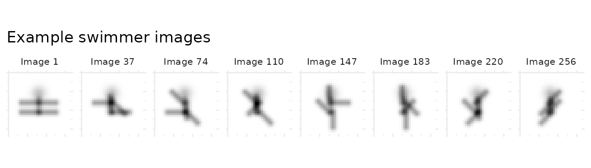
We fit NMF at four L1 levels to see how sparsity affects factor interpretability. All models share the same random initialization (seed = 42).
l1_values <- c(0, 0.05, 0.1, 0.5)
results <- lapply(l1_values, function(l1) {
nmf(A, k = 16, L1 = c(l1, 0), seed = 42, tol = 1e-5, maxit = 200, verbose = FALSE)
})
sparsity_df <- data.frame(
L1 = l1_values,
Sparsity = sapply(results, function(m) 100 * mean(m@w == 0))
)
ggplot(sparsity_df, aes(x = L1, y = Sparsity)) +
geom_line(linewidth = 0.8) + geom_point(size = 3) +
labs(x = "L1 penalty", y = "W sparsity (% exact zeros)",
title = "L1 penalty drives factor sparsity") +
theme_minimal()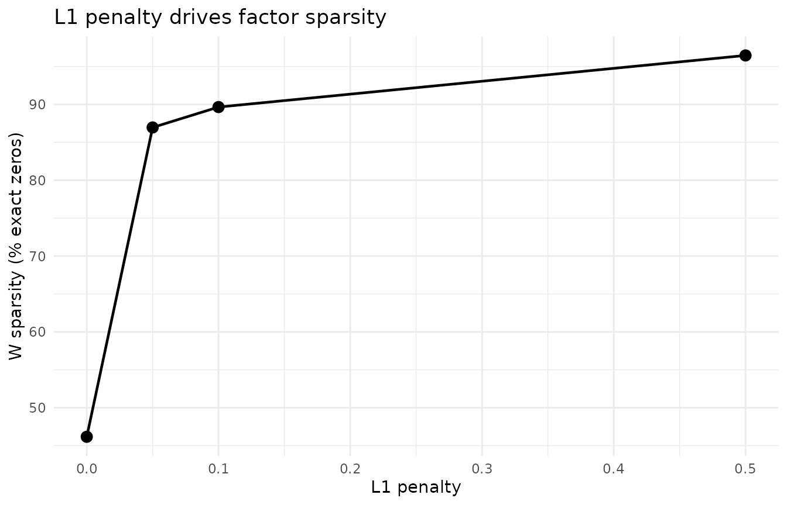
At L1 = 0 (no penalty), factors are dense and hard to interpret. As L1 increases, more coefficients are driven to exactly zero — each factor isolates a specific limb position. Beyond L1 = 0.5, factors become over-sparse and lose structure.
# Use L1 = 0.1 as reference (all 16 factors alive; L1 = 0 can have dead factors)
ref_model <- results[[which(l1_values == 0.1)]]
# Select 4 diverse factors (lowest mean off-diagonal cosine similarity)
ref_cos <- cosine(ref_model@w)
diag(ref_cos) <- 0
ref_mean_sim <- colMeans(ref_cos)
factor_ids <- order(ref_mean_sim)[1:4]
# For each L1 model, find best greedy cosine match to each reference factor
plot_data <- do.call(rbind, lapply(seq_along(l1_values), function(i) {
model <- results[[i]]
used <- integer(0)
do.call(rbind, lapply(factor_ids, function(fi) {
if (l1_values[i] == 0.1) {
best <- fi # reference model: show factor directly
} else {
cos_sims <- as.vector(cosine(ref_model@w[, fi, drop = FALSE], model@w))
cos_sims[used] <- -Inf # exclude already-matched
best <- which.max(cos_sims)
}
used <<- c(used, best)
vals <- rescale01(model@w[, best])
grid <- expand.grid(x = 1:32, y = 1:32)
grid$value <- vals
grid$factor <- paste("Factor", fi)
grid$L1 <- paste0("L1 = ", l1_values[i])
grid
}))
}))
plot_data$L1 <- factor(plot_data$L1, levels = paste0("L1 = ", l1_values))
ggplot(plot_data, aes(x = x, y = y, fill = value)) +
geom_raster() +
scale_fill_gradient(low = "white", high = "black") +
scale_y_reverse() +
facet_grid(factor ~ L1) +
coord_equal() +
theme_minimal() +
theme(axis.text = element_blank(), axis.ticks = element_blank(),
axis.title = element_blank(), legend.position = "none",
strip.text = element_text(size = 8)) +
ggtitle("Swimmer factors at increasing L1 sparsity")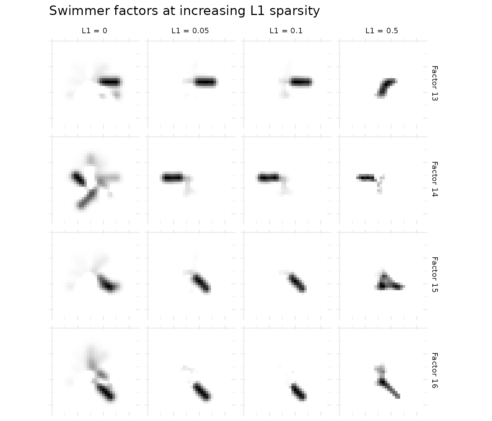
The progression is clear: L1 = 0 produces diffuse factors; L1 = 0.1 yields clean, localized limb positions; L1 = 0.5 produces the sparsest factors.
Example 2: Angular Decorrelation on Face Data
When factors have high cosine similarity, they capture overlapping structure. Angular regularization penalizes pairwise cosine similarity between factors, producing more distinct components. Angular acts on W (factor profiles), decorrelating the directions factors occupy in feature space without penalizing the loading matrix H.
data(olivetti)
A_faces <- t(olivetti) # 4096 pixels x 400 images (40 subjects × 10 poses)
baseline <- nmf(A_faces, k = 20, seed = 42, tol = 1e-5, maxit = 200)
decorr <- nmf(A_faces, k = 20, angular = c(0.1, 0), seed = 42, tol = 1e-5, maxit = 200)
# Align decorrelated factors to baseline via bipartite matching on cosine distance
decorr <- align(decorr, baseline)
# Compute factor cosine similarity matrices
cos_base <- cosine(baseline@w)
cos_decorr <- cosine(decorr@w)
# Mean off-diagonal cosine similarity
mean_cos_base <- mean(cos_base[upper.tri(cos_base)])
mean_cos_decorr <- mean(cos_decorr[upper.tri(cos_decorr)])
cos_compare <- data.frame(
Model = factor(rep(c("Baseline", "Angular (0.1)"), each = 2),
levels = c("Baseline", "Angular (0.1)")),
Metric = rep(c("Mean cosine similarity", "Reconstruction MSE"), 2),
Value = c(mean_cos_base, evaluate(baseline, A_faces),
mean_cos_decorr, evaluate(decorr, A_faces))
)
ggplot(cos_compare, aes(x = Model, y = Value, fill = Model)) +
geom_col(width = 0.6, show.legend = FALSE) +
facet_wrap(~ Metric, scales = "free_y") +
theme_minimal() +
labs(y = NULL, title = "Angular regularization: cosine similarity and reconstruction cost")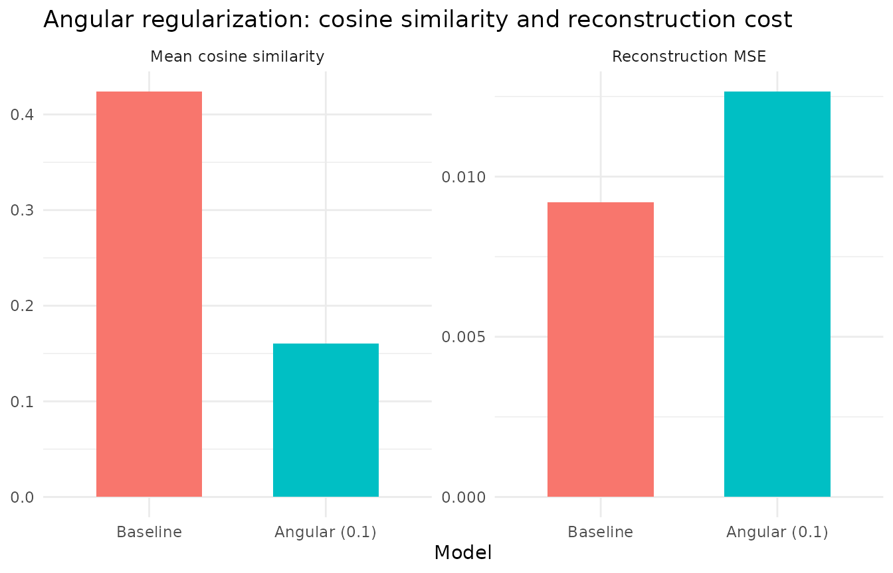
Angular = 0.1 reduces the mean off-diagonal cosine similarity by more than half while all 20 factors remain alive and reconstruction cost increases modestly. The penalty operates via a post-solve projection step that subtracts correlated components from each factor after each NNLS update, directly decorrelating factor profiles.
# Build cosine similarity heatmap data for both models (all 20 factors)
make_cos_df <- function(cos_mat, label) {
n <- nrow(cos_mat)
grid <- expand.grid(Factor1 = 1:n, Factor2 = 1:n)
grid$similarity <- as.vector(cos_mat)
grid$method <- label
grid
}
heatmap_data <- rbind(
make_cos_df(cos_base, "Baseline"),
make_cos_df(cos_decorr, "Angular (0.1)")
)
ggplot(heatmap_data, aes(x = Factor1, y = Factor2, fill = similarity)) +
geom_raster() +
scale_fill_viridis_c(option = "B", limits = c(0, 1), oob = scales::squish) +
facet_wrap(~ method) +
theme_minimal() +
theme(aspect.ratio = 1) +
labs(fill = "Cosine\nsimilarity", title = "Factor cosine similarity: Baseline vs. Angular regularization")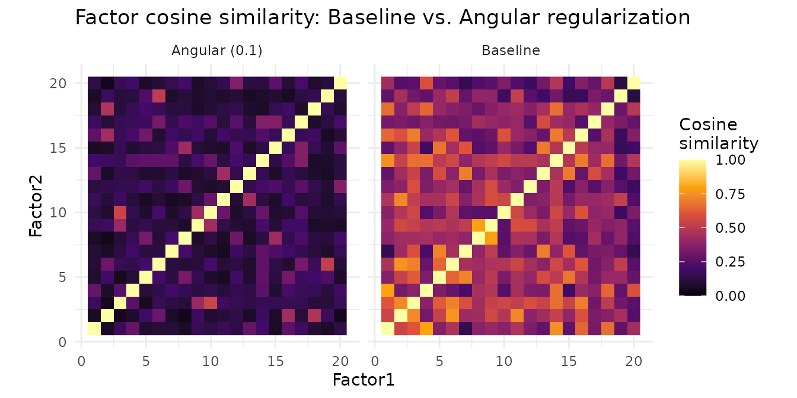
The baseline heatmap shows substantial off-diagonal similarity — many factor pairs share structure. Angular regularization reduces these off-diagonal entries, producing more distinct factors without killing any.
# Helper to build a face image data.frame with correct orientation
face_img_df <- function(vals, factor_label, method_label) {
img <- t(matrix(vals, 64, 64))
grid <- expand.grid(Row = 1:64, Col = 1:64)
grid$Value <- as.vector(img)
grid$Factor <- factor_label
grid$Method <- method_label
grid
}
# Select 5 best-matched factor pairs (highest cosine similarity after alignment)
cross_cos <- cosine(baseline@w, decorr@w)
pair_sim <- diag(cross_cos)
best5 <- order(pair_sim, decreasing = TRUE)[1:5]
face_data <- do.call(rbind, lapply(best5, function(fi) {
rbind(
face_img_df(rescale01(baseline@w[, fi]), paste("Factor", fi), "Baseline"),
face_img_df(rescale01(decorr@w[, fi]), paste("Factor", fi), "Angular (0.1)")
)
}))
face_data$Method <- factor(face_data$Method, levels = c("Baseline", "Angular (0.1)"))
ggplot(face_data, aes(x = Col, y = rev(Row), fill = Value)) +
geom_raster() +
facet_grid(Method ~ Factor) +
scale_fill_gradient(low = "black", high = "white") +
theme_minimal() +
theme(axis.text = element_blank(), axis.ticks = element_blank(),
axis.title = element_blank(), legend.position = "none",
strip.text = element_text(size = 9)) +
ggtitle("Best-matched NMF face factors: Baseline vs. Angular") +
coord_equal()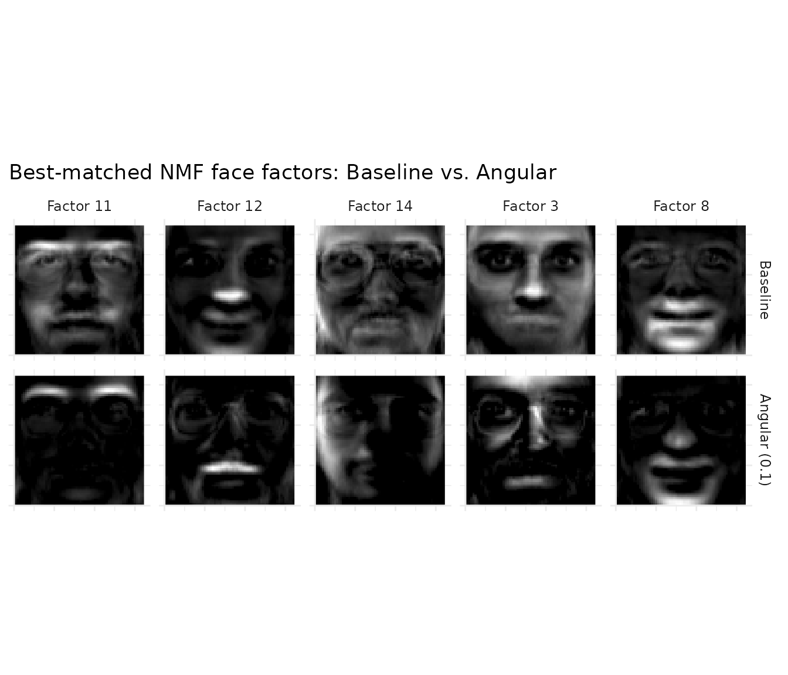
The five best-matched factor pairs show how angular regularization reshapes each factor. At this penalty strength, factors shift noticeably — the penalty doesn’t just tweak magnitudes but changes which spatial features each factor emphasizes, producing more distinct components.
Angular Penalty Sweep
To choose the angular penalty strength, sweep the parameter and monitor the cosine similarity–reconstruction trade-off:
angular_vals <- seq(0, 0.5, by = 0.05)
sweep_results <- do.call(rbind, lapply(angular_vals, function(a) {
m <- nmf(A_faces, k = 20, angular = c(a, 0), seed = 42, tol = 1e-5, maxit = 200)
cos_m <- cosine(m@w)
data.frame(
Angular = a,
CosineSim = mean(cos_m[upper.tri(cos_m)]),
MSE = evaluate(m, A_faces),
MaxCos = max(cos_m[upper.tri(cos_m)])
)
}))
sweep_long <- rbind(
data.frame(Angular = sweep_results$Angular,
Metric = "Reconstruction MSE", Value = sweep_results$MSE),
data.frame(Angular = sweep_results$Angular,
Metric = "Mean cosine similarity", Value = sweep_results$CosineSim),
data.frame(Angular = sweep_results$Angular,
Metric = "Max cosine similarity", Value = sweep_results$MaxCos)
)
ggplot(sweep_long, aes(x = Angular, y = Value)) +
geom_line(linewidth = 0.8) + geom_point(size = 2) +
facet_wrap(~ Metric, scales = "free_y", ncol = 1) +
labs(x = "Angular penalty strength", y = NULL,
title = "Angular penalty sweep (W only, 0\u20130.5)") +
theme_minimal()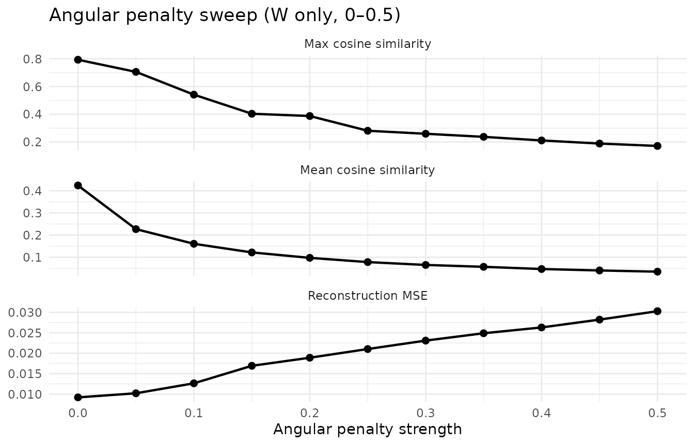
The sweep shows a smooth trade-off: both mean and max cosine similarity decrease monotonically while all 20 factors remain alive across the entire range. Reconstruction cost rises gently — at angular = 0.1, MSE increases modestly while mean cosine similarity drops by more than half. Very mild angular (around 0.02) can even improve reconstruction by breaking factor redundancy. This is the hallmark of a well-behaved regularizer: predictable, stable, and easy to tune.
L1 for Parts-Based Decomposition
Angular regularization reduces factor similarity but keeps them dense — each factor still activates most pixels. L1 sparsity produces a qualitatively different result: parts instead of wholes. With moderate L1, each factor localizes to a specific facial feature (eyes, nose, mouth, jaw) rather than capturing a full-face template.
# Sweep L1 strengths
l1_face_vals <- c(0, 0.05, 0.1, 0.2, 0.3)
l1_models <- lapply(l1_face_vals, function(l1) {
nmf(A_faces, k = 20, L1 = c(l1, 0), seed = 42, tol = 1e-5, maxit = 200)
})
# Align all models to baseline via bipartite matching
l1_models <- lapply(l1_models, function(m) align(m, baseline))
l1_sweep <- data.frame(
L1 = l1_face_vals,
MSE = sapply(l1_models, function(m) evaluate(m, A_faces)),
Sparsity = sapply(l1_models, function(m) 100 * mean(m@w == 0))
)
l1_sweep_long <- rbind(
data.frame(L1 = l1_sweep$L1, Metric = "Reconstruction MSE", Value = l1_sweep$MSE),
data.frame(L1 = l1_sweep$L1, Metric = "W sparsity (% zeros)", Value = l1_sweep$Sparsity)
)
ggplot(l1_sweep_long, aes(x = L1, y = Value)) +
geom_line(linewidth = 0.8) + geom_point(size = 2.5) +
facet_wrap(~ Metric, scales = "free_y", ncol = 1) +
labs(x = "L1 penalty strength", y = NULL,
title = "L1 sweep on faces: reconstruction vs. sparsity tradeoff") +
theme_minimal()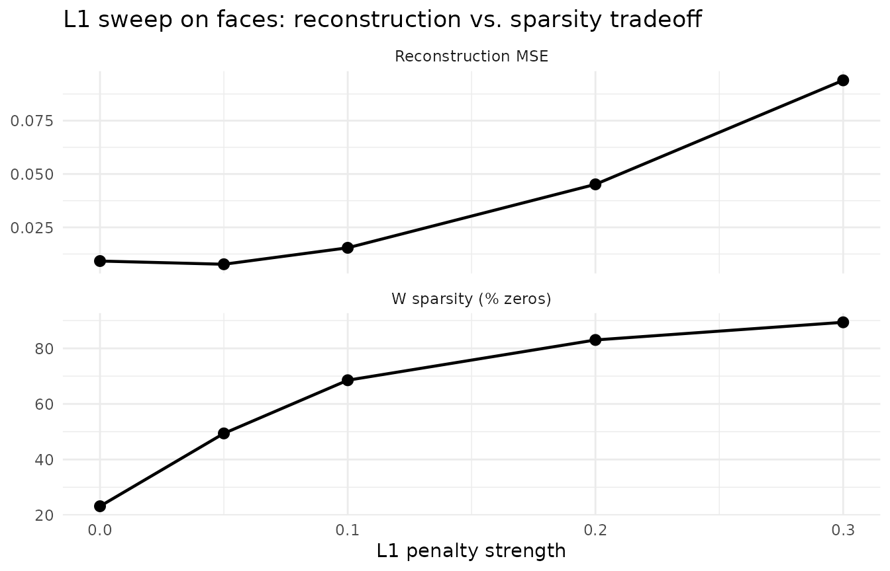
As L1 increases, reconstruction error rises but W becomes dramatically sparser. At L1 = 0.3, each factor activates a compact facial region rather than the entire face — the signature of parts-based decomposition.
# Select 5 diverse baseline factors (lowest mean off-diagonal cosine similarity)
baseline_cos <- cosine(baseline@w)
diag(baseline_cos) <- 0
mean_sim <- colMeans(baseline_cos)
show_factors <- order(mean_sim)[1:5]
# For each L1 model and each baseline factor, find the MAX cosine match
parts_data <- do.call(rbind, lapply(seq_along(l1_face_vals), function(li) {
model <- l1_models[[li]]
do.call(rbind, lapply(show_factors, function(fi) {
if (li == 1) {
best <- fi # baseline: show the factor itself
} else {
cos_sims <- cosine(baseline@w[, fi, drop = FALSE], model@w)
best <- which.max(cos_sims)
}
face_img_df(rescale01(model@w[, best]),
paste("Factor", fi),
paste0("L1 = ", l1_face_vals[li]))
}))
}))
parts_data$Method <- factor(parts_data$Method,
levels = paste0("L1 = ", l1_face_vals))
ggplot(parts_data, aes(x = Col, y = rev(Row), fill = Value)) +
geom_raster() +
facet_grid(Factor ~ Method) +
scale_fill_gradient(low = "black", high = "white") +
theme_minimal() +
theme(axis.text = element_blank(), axis.ticks = element_blank(),
axis.title = element_blank(), legend.position = "none",
strip.text = element_text(size = 9)) +
ggtitle("Face factors across L1 penalties") +
coord_equal()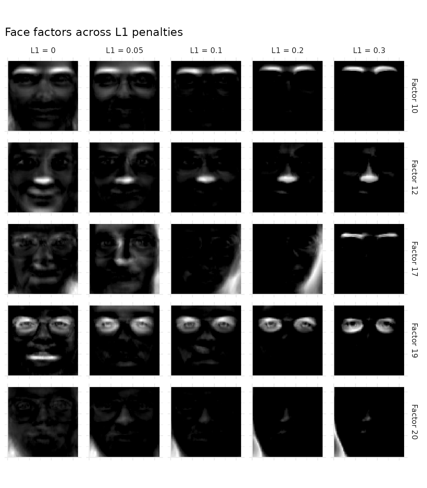
Each row tracks a baseline factor across L1 strengths by finding the maximum cosine-matching factor in each L1 model. At L1 = 0, factors are dense “metafaces” that each resemble a blurry composite face. As L1 increases, each factor localizes to a specific facial region — eyes, nose, mouth, or chin. By L1 = 0.3, the result is the classic NMF parts-based decomposition.
Example 3: Graph Laplacian for Spatial Smoothness
When data has spatial or network structure, graph Laplacian regularization encourages connected nodes to share similar factor values. This is especially useful in spatial transcriptomics, where tissue spots have known physical coordinates but standard NMF is agnostic to their spatial arrangement.
We demonstrate this on the 10X Visium mouse brain dataset from SeuratData. This
requires the SeuratData and Seurat packages.
If they are not installed, the code blocks below are silently skipped —
install SeuratData and stxBrain.SeuratData to
see the spatial results.
brain <- SeuratData::LoadData("stxBrain", type = "anterior1")
brain <- Seurat::NormalizeData(brain, normalization.method = "LogNormalize",
scale.factor = 1e4, verbose = FALSE)
coords <- Seurat::GetTissueCoordinates(brain)
A_norm <- SeuratObject::GetAssayData(brain, layer = "data")
A_brain <- as(A_norm, "dgCMatrix")
# Build 6-nearest-neighbor spatial graph from tissue coordinates
xy <- as.matrix(coords[, c("x", "y")])
n_spots <- nrow(xy)
k_nn <- 6
dist_mat <- as.matrix(dist(xy))
adj <- Matrix::sparseMatrix(i = integer(0), j = integer(0), x = numeric(0),
dims = c(n_spots, n_spots))
for (i in seq_len(n_spots)) {
neighbors <- order(dist_mat[i, ])[2:(k_nn + 1)]
adj[i, neighbors] <- 1
adj[neighbors, i] <- 1
}
degree <- Matrix::rowSums(adj)
laplacian <- Matrix::Diagonal(x = degree) - adj
laplacian <- as(laplacian, "dgCMatrix")
# Graph regularization loss: tr(D*H L H'*D) / k, accounting for d-scaling
graph_reg_loss <- function(model, L) {
mean(sapply(seq_len(nrow(model@h)), function(f) {
h <- model@d[f] * model@h[f, ]
as.numeric(t(h) %*% L %*% h)
}))
}
# Sweep lambda: reconstruction vs. smoothness tradeoff
k_brain <- 15
lambda_vals <- c(0, 0.01, 0.05, 0.1, 0.5)
graph_models <- lapply(lambda_vals, function(lam) {
nmf(A_brain, k = k_brain, graph_H = laplacian,
graph_lambda = c(0, lam), seed = 42, tol = 1e-5, maxit = 200)
})
graph_sweep <- data.frame(
lambda = lambda_vals,
MSE = sapply(graph_models, function(m) evaluate(m, A_brain)),
graph_loss = sapply(graph_models, function(m) graph_reg_loss(m, laplacian))
)
# Extract baseline and lambda=0.5 models for comparison
baseline_g <- graph_models[[1]]
smooth_g <- graph_models[[which(lambda_vals == 0.5)]]
# Two-panel sweep plot
graph_sweep_long <- rbind(
data.frame(lambda = graph_sweep$lambda, Metric = "Reconstruction MSE",
Value = graph_sweep$MSE),
data.frame(lambda = graph_sweep$lambda, Metric = "Graph loss (tr(HLH')/k)",
Value = graph_sweep$graph_loss)
)
graph_sweep_long$lambda_f <- factor(graph_sweep_long$lambda)
ggplot(graph_sweep_long, aes(x = lambda_f, y = Value, group = 1)) +
geom_line(linewidth = 0.8) + geom_point(size = 2.5) +
facet_wrap(~ Metric, scales = "free_y", ncol = 1) +
labs(x = expression("Graph regularization strength ("*lambda*")"), y = NULL,
title = "Graph Laplacian sweep: reconstruction vs. spatial smoothness") +
theme_minimal()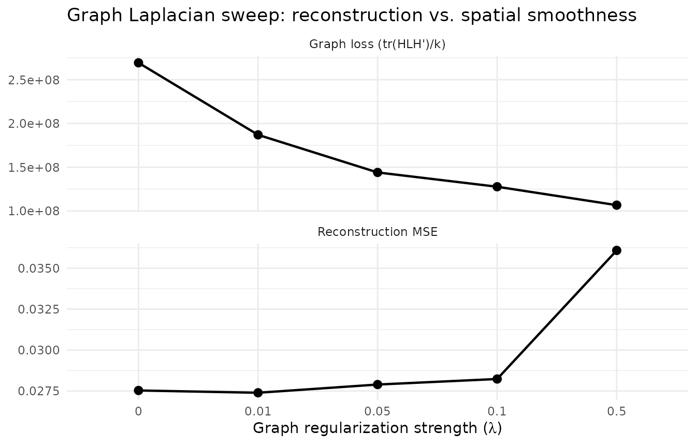
As λ increases, graph loss decreases (smoother factor loadings) while reconstruction error rises — the classic regularization tradeoff.
The spatial effect of graph regularization is visible as a trajectory across λ values. For each baseline factor, we find the maximum cosine-matching factor in each regularized model to track how spatial patterns evolve with increasing regularization.
# Trajectory: factors as rows, lambda values as columns
traj_lambdas <- c(0, 0.01, 0.05, 0.5)
traj_models <- lapply(traj_lambdas, function(lam) {
idx <- which(lambda_vals == lam)
graph_models[[idx]]
})
# Select 4 diverse baseline factors (lowest mean off-diagonal cosine similarity)
base_cos <- cosine(baseline_g@w)
diag(base_cos) <- 0
base_mean_sim <- colMeans(base_cos)
show_factors <- order(base_mean_sim)[1:4]
# Build spatial trajectory data using max-cosine matching
traj_data <- do.call(rbind, lapply(seq_along(traj_lambdas), function(li) {
model <- traj_models[[li]]
do.call(rbind, lapply(show_factors, function(fi) {
if (li == 1) {
best <- fi # baseline: show the factor itself
} else {
cos_sims <- cosine(baseline_g@w[, fi, drop = FALSE], model@w)
best <- which.max(cos_sims)
}
h_vals <- rescale01(model@h[best, ])
data.frame(
x = xy[, 1], y = xy[, 2], loading = h_vals,
Factor = paste("Factor", fi),
Lambda = paste0("\u03bb = ", traj_lambdas[li])
)
}))
}))
traj_data$Lambda <- factor(traj_data$Lambda,
levels = paste0("\u03bb = ", traj_lambdas))
ggplot(traj_data, aes(x = x, y = y, color = loading)) +
geom_point(size = 1.0, shape = 16, stroke = 0) +
scale_color_viridis_c(option = "inferno") +
facet_grid(Factor ~ Lambda) +
coord_fixed() +
labs(color = "Loading", x = NULL, y = NULL,
title = "Spatial factor trajectory across graph regularization strength") +
theme_minimal() +
theme(strip.text = element_text(size = 8),
axis.text = element_blank(), axis.ticks = element_blank())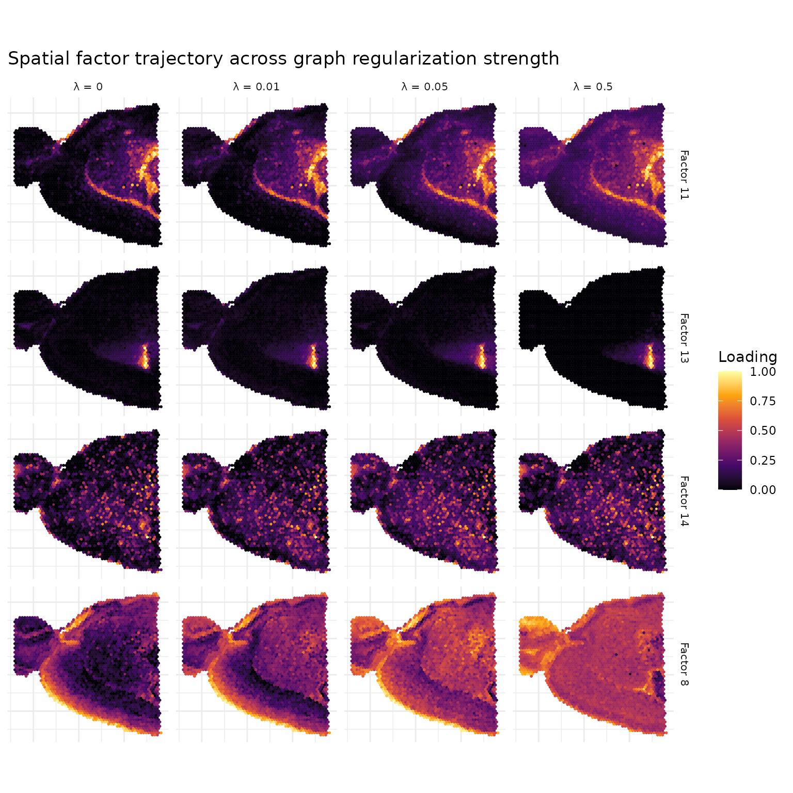
At λ = 0, factors show spatial patterns that arise purely from gene co-expression. As λ increases, the graph Laplacian penalty encourages neighboring spots to have similar loadings, producing smoother spatial domains with fewer isolated outlier spots.
# Graph Laplacian loss per factor: tr(d*h L h'*d) for each factor
graph_loss_per_factor <- function(model, L) {
sapply(seq_len(nrow(model@h)), function(f) {
h <- model@d[f] * model@h[f, ]
as.numeric(t(h) %*% L %*% h)
})
}
gl_base <- graph_loss_per_factor(baseline_g, laplacian)
gl_smooth <- graph_loss_per_factor(smooth_g, laplacian)
gl_df <- data.frame(
Model = factor(c(rep("Baseline", k_brain),
rep("Graph (\u03bb = 0.5)", k_brain)),
levels = c("Baseline", "Graph (\u03bb = 0.5)")),
GraphLoss = c(gl_base, gl_smooth),
Factor = rep(seq_len(k_brain), 2)
)
ggplot(gl_df, aes(x = Model, y = GraphLoss)) +
geom_violin(width = 0.7, fill = "grey80", alpha = 0.7) +
geom_jitter(width = 0.1, size = 2, alpha = 0.7) +
labs(x = NULL, y = expression("Graph Laplacian loss: tr(h L h'"*")"),
title = "Graph regularization reduces spatial roughness") +
theme_minimal()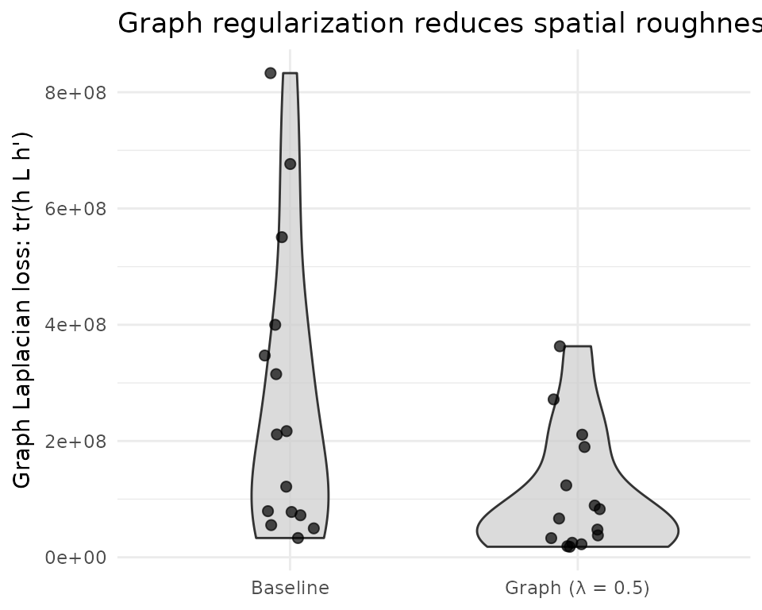
The graph Laplacian loss directly measures how much each factor’s spatial loadings vary between neighboring spots. Graph regularization systematically reduces this metric across all factors, confirming that the penalty produces factors with smoother spatial patterns. This is the metric the optimizer targets — its reduction is guaranteed by construction.
What’s Next
- See the NMF Fundamentals vignette for the core NMF API.
- See the Factor Graphs vignette for regularization within composable graph architectures.